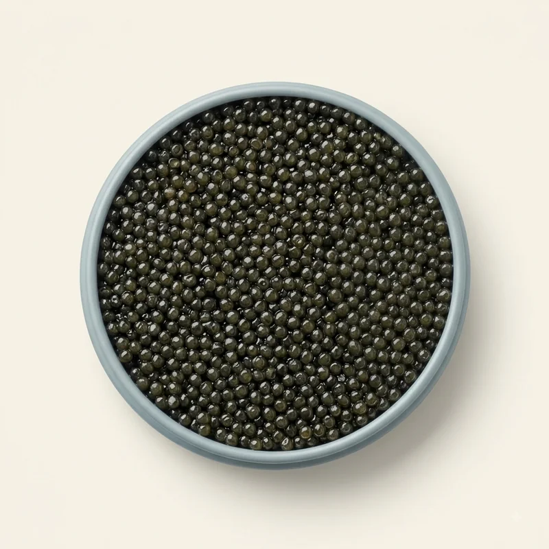

Osciètre
Caractère
Un grain ferme, presque croquant, qui roule en bouche avant de céder. Les premières notes sont beurrées, puis vient la noisette, nette, sans amertume. La longueur est moyenne, portée par une salinité discrète.
Données
EspèceAcipenser gueldenstaedtii
Calibre du grain2,8 – 3,2 mm
AffinageMalossol
Taux de sel≤ 3,5 %
MillésimeLot en cours
Grammages30 g · 50 g · 125 g · 500 g
Accords & service
Blinis tièdes, crème légèrement acidulée, un verre très froid. Éviter tout ce qui masquerait le grain.